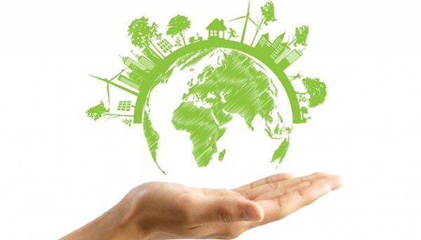

Mision
crear una ventana y punto de encuentro de personas con nuestros mismos puntos de vista, para promover pensamiento ecológico, generar debate, motivar y estimular ideas nuevas en torno a valores como el turismo sostenible, el consumo responsable, la eficiencia energética, el respeto por el medioambiente, la educación ambiental, la permacultura y la sostenibilidad. Queremos promover la búsqueda de un equilibrio con la naturaleza que nos rodea y con los seres humanos con los que convivimos. Sin caer en pensamientos utópicos sino alcanzables, nuestra visión es llegar a un futuro no muy lejano en donde la ciudadanía de a pie sea consciente de que un cambio de modelo es necesario y, sobre todo, posible